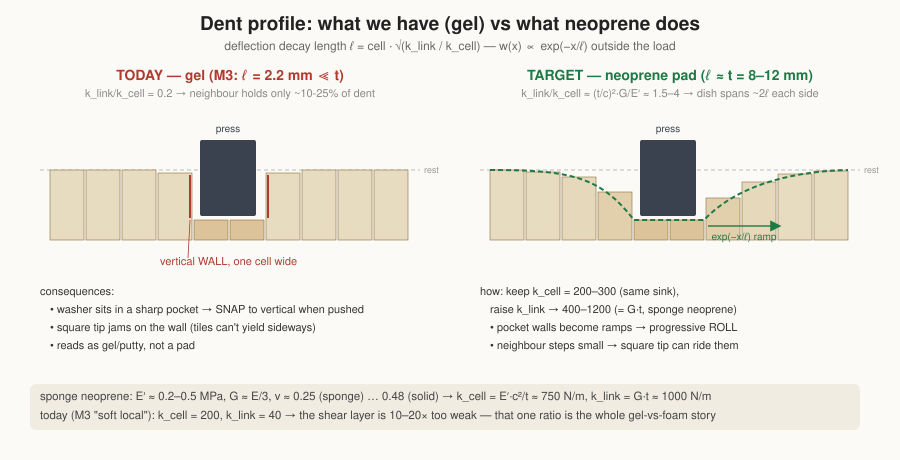
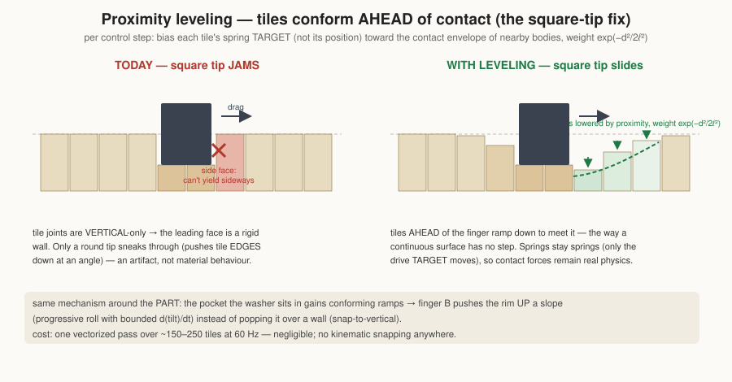
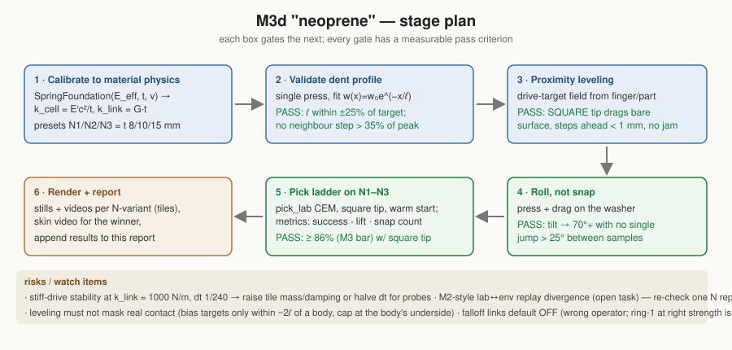

(left-to-right: the couple=150 dish under finger+washer — but note the edge of the dish still drops from 3.3 mm to 0.9 mm in ONE cell: a wall, not a slope)
(left-to-right: the couple=150 dish under finger+washer — but note the edge of the dish still drops from 3.3 mm to 0.9 mm in ONE cell: a wall, not a slope)Compliant work-surface for the washer press→drag→roll-up pick. What the model is, what we measured across four material variants, why the current material behaves like a gel rather than a foam/neoprene pad, and the calculations for the neoprene-like next iteration.
All image/video links are relative to this file (open via the file browser at this data/reports/ folder).
The surface is a grid of small rigid tile columns (graspsort/soft_foundation.py). Each tile has three ingredients, all integrated by PhysX (no per-step scripting):
| ingredient | implementation | physical meaning |
|---|---|---|
| vertical spring | prismatic joint to world, linear drive: stiffness k_cell, damping c | a column of the pad compressing: k_cell ≈ E′·cell²/t (E′ = effective compression modulus, t = pad thickness) |
| shear coupling | D6 joint per neighbour pair, Z-drive pulling heights equal: stiffness k_link | the Pasternak shear layer: k_link ≈ G·t (G = shear modulus). Note G·t is independent of cell size |
| drop-off (optional) | extra links to neighbours-of-neighbours at k_link·falloff^(r−1), truncated below cutoff | non-local smoothing (ad-hoc; see §4 — the proper operator is the ring-1 Laplacian at the right strength) |
This is a discrete Winkler–Pasternak foundation. Its single most important emergent property is the characteristic decay length of a dent:
ℓ = cell · √(k_link / k_cell)
Outside a loaded region the deflection falls off as w(x) ∝ exp(−x/ℓ). ℓ is what your eye reads as "foam vs gel". A real elastic pad spreads its dent over roughly its own thickness (ℓ ≈ t); a gel/putty localises (ℓ → 0).
The smooth skin (SurfaceSkin) is purely cosmetic: a non-colliding Catmull-Clark mesh re-draped over the tile tops each rendered frame.
One-sided 3 mm press on an M12 washer, centre-row deflection (mm), 4 mm cells:
couple = 0 (pure Winkler): .2 .2 .2 .2 | 3.0 3.0 3.0 3.0 | .2 .2 .2 → hard dimple, washer FLIPS to 89° couple = 150 (Pasternak): .2 .3 .7 4.2 6.0 5.0 4.4 4.1 3.8 3.3 .9 .3 → dish, washer settles ~8°
(left-to-right: the couple=150 dish under finger+washer — but note the edge of the dish still drops from 3.3 mm to 0.9 mm in ONE cell: a wall, not a slope)
Historical baseline: the two-finger press→drag→roll-up pick learned by CEM per material (tools/pick_lab.py, 8 rigs × 8 rounds, 64 evals each; replays in tools/render_pick.py). These runs used the capsule-tip workaround and no proximity leveling — the latest results (square tip + leveling + calibrated neoprene) are in §6. Full data: ../2026-07-04/lab_mats2/.
| material | k_cell | k_link | falloff | ℓ (mm) | success | best lift | assets |
|---|---|---|---|---|---|---|---|
| M0 as-is | 300 | 150 | 0 | 3.5 | 59 % | 64.9 mm | engaged · lifted · video |
| M1 drop-off | 300 | 150 | 0.5 | ~4.5 | 56 % | 59.0 mm | lifted · video |
| M2 firm+local | 600 | 80 | 0.4 | 1.8 | 42 % | 54.4 mm | video (replay brittle in full env — open task) |
| M3 soft+local | 200 | 40 | 0.3 | 2.2 | 86 % | 34.9 mm | lifted · video · skin video |

Maneuver findings baked into the lab along the way: the pinch gap must close below washer thickness (the compliant finger-B spring turns overlap into a bounded grip force), and the close must happen at depth before the lift (else the rolled-up washer is left standing in the foam at +11.7 mm = OD/2 − sink).
Every observation from review traces to ℓ being ~2–4 mm when a neoprene-like pad of this thickness should have ℓ ≈ 8–12 mm (k_link 10–20× too weak):
exp(−cell/ℓ) ≈ 10–25 % of the pressed depth → a near-vertical wall one cell wide. Gel/putty response.Material data (see sources): solid neoprene E ≈ 2–5 MPa, ν ≈ 0.48; neoprene sponge (pad material) is ~10× softer — measured soft-rubber values E ≈ 0.46 MPa, G ≈ 0.15 MPa (ν ≈ 0.5); open/closed-cell foams run ν ≈ 0–0.3.
For a pad of thickness t = 10 mm, cells c = 5 mm, sponge-neoprene E′ ≈ 0.2–0.5 MPa, G ≈ E/3:
k_cell = E′·c²/t = 0.3e6 × 2.5e-5 / 0.01 ≈ 750 N/m (we run 200–300: slightly softer pad — fine) k_link = G·t = 0.1e6 × 0.01 ≈ 1000 N/m (we run 40–150: 10–20× TOO WEAK ← the bug) ratio = k_link/k_cell ≈ (t/c)²·(G/E′) ≈ (t/c)²/3 ≈ 1.3–4 ℓ = c·√(ratio) ≈ 6–10 mm ≈ t (foam/neoprene: dent spreads ≈ pad thickness)
Target: k_link ≈ 1.5–4 × k_cell (today: 0.2×). Because the deflection shape depends only on the ratio, we can keep k_cell at the validated 200–300 and raise k_link to ~400–1200 — the sink depth stays familiar, the dish widens.
Additional corrections to match a continuous pad:
falloff for experiments; default it off.exp(−d²/2ℓ²). Tiles ahead of a dragging finger ramp down to meet it → no wall → square tip works, and the pocket around the washer gains real ramps → smoother roll, no snap.


E_eff, t, ν on SpringFoundation and derive k_cell, k_link, ℓ (raw overrides stay). Neoprene presets N1 (t=8), N2 (t=10), N3 (t=15 mm).exp(−x/ℓ); pass = fitted ℓ within ±25 % of target and no one-cell cliffs (max step between neighbours < 35 % of peak).d(tilt)/dt bounded (no single-step jump > 25°) → "roll, not snap".Success for the stage: ≥ M3's 86 % with a square tip and no snap, on a material whose measured ℓ ≈ pad thickness — i.e. the pick works because the material is right, not despite it.
Everything in §5 steps 1–5 was implemented and run (data/2026-07-04/{profile2,profile3,lab_neo,lab_neo2}).
Profile calibration. The bar-load probe found a constant solver correction α ≈ 4: PhysX TGS under-enforces stiff drive chains, so the dish comes out ~2× narrower than the Pasternak prediction (unchanged by solver iteration bumps). neoprene() therefore configures couple = 4·G·t. Measured ramps at k_cell = 250: ratio 6 → neighbour 44 % of peak; ratio 10 → 52 / 35 / 16 % over three tiles — the fig/01 target shape. (The gel: 13 %.)

Proximity leveling works. With level_targets() + a square tip, every material in the ladder picks — including the old gel (its v1 square-tip drags jammed outright). The leveling is what makes square-tip contact possible; the coupling ratio is what shapes the dish.
Pick ladder (8 rigs × 8 rounds each, square tip, leveling on):
| material | success | arrival-snap among successes | best lift |
|---|---|---|---|
| NEO_R6 (ratio 6) | 48 % | 31/31 (~52°/sample) | 32.0 mm |
| NEO_R10 (ratio 10) | 44 % | 28/28 (~54°/sample) | 36.3 mm |
| gel + leveling (control) | 61 % | 31/39 — 2 clean rolls found (23°/sample) | 40.7 mm |
The honest headline: realism costs ease, and the snap moved, it didn't die. On the realistic dish a one-sided press mostly pushes the washer down (the neighbourhood follows — that's the material being right). CEM's winning neoprene strategy became a rim-press pop: press the washer's extreme edge (a_off → 11.4–11.7 mm of a 12 mm radius), the washer squirts upward like a squeezed watermelon seed, catch it between the fingers. Effective — but the fast tilt jump is now a policy exploit of rigid-washer dynamics, no longer the pocket-wall artifact of §3. The old gel, ironically, is what allowed slow 23°/sample rolls, because its sharp pocket holds the washer's near edge while the far edge climbs.
Fork for the next phase (needs a design call):
Pressed — note the wide smooth dish across the tile field (the calibrated neoprene response; compare the one-cell pocket in §2.1):

Engaged — the washer rolled up against the square blue finger:

Lifted clear:

Full maneuver videos (~9 s each): tiles view · foam-skin view
(The gel "clean roll" candidate — 23°/sample in-lab — did NOT reproduce when replayed in the full env (render_gel_cleanroll/): washer left at rest. Fragile, like the M2 replays — marginal gel-material behaviours don't transfer between contexts; another point for doing realism properly.)
David's redesign resolved the §6 fork in favour of the gentle roll — with a different primitive, not a different material: bind both fingers into ONE gripper (they descend together, A ~50 % over the rim touches first), use B's spring deflection as the touch sensor, then pull up and together. Success redefined: the washer must clear the press-down height (hang free of the dish), not the original surface.
What the iterations taught (each diagnosed from a failed smoke/CEM run): close-while-rising bulldozes the part sideways; closing fully at depth irons it flat; pressing harder mostly sinks (1.2 of 1.8 mm — the pad being realistic); the roll comes from B rising with the edge held by friction, so the winning knob is a power-law close that lags the rise and completes at the end (close_pow ≈ 1.9).
Ladder v2 (8 rigs × 10 rounds each, square tip, leveling, gentle press ≤ 4.8 mm):
| material | success | gentle successes (dtilt < 25°/sample) | best clearance |
|---|---|---|---|
| SOFT220 (k 220, ratio 8) | 46 % (6/8 final round) | 7, best dtilt 7° | 6.0 mm |
| MED250 (k 250, ratio 8) | 25 % | 6 | 5.6 mm |
The gentle pick exists on the realistic material: 13 runs rolled the washer smoothly (6–13°/sample — compare ~52° for the M3d pop-catch), captured it between the fingers, and lifted it clear of the pressed dish. θ converged to a_over ≈ 0.6 (slightly more than half over the rim), press ≈ 4 mm, gap ≈ 2.8 mm, rise ≈ 12–14 mm.
Two caveats, honestly measured:
Engaged — the bound gripper has descended as one unit, A pressing ~60 % over the rim, the washer rolled between the fingers in the soft dish:

Lifted — washer pinched between the fingertips, carried clear of the bed:

graspsort/soft_foundation.py (SpringFoundation + SurfaceSkin)tools/pick_lab.py · replay/render: tools/render_pick.py../2026-07-04/lab_mats2/ (evals.jsonl, results.json, learning_curves.png)../2026-07-04/render_{M0_asis,M1_dropoff,M2_firm_local,M3_soft_local,M3_skin}/../2026-07-03/{couple_0,couple_150,rf9,skin1}/{kind=link}
{kind=link}
{kind=link}
{kind=link}